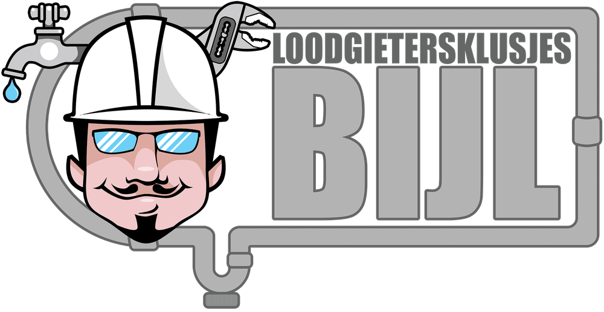
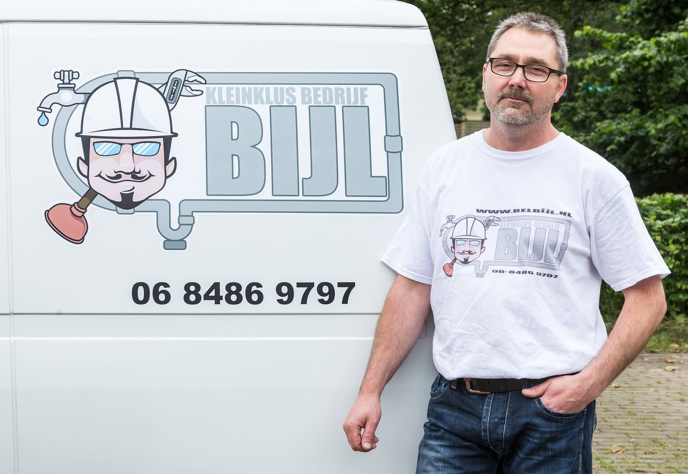

Lekkende kraan? Vaak dezelfde dag geholpen.
Loodgieter voor kleine klussen in Nijmegen en omgeving. Een lekkende kraan, een doorlopend toilet of een zichtbare lekkage.

Klusjes van een kwartiertje tot twee uur
Kleine loodgieterswerkzaamheden voor particulieren. Door me op kleinere klussen te richten kan ik snel schakelen en duidelijke afspraken maken.
- Kranen repareren en vervangen
- Toiletpotten en stortbakken repareren en vervangen
- Zichtbare lekkages aan waterleiding, cv en riool verhelpen
- Sanitair vervangen: wastafels, fonteinen, badmeubels
- Radiatorkranen en thermostaatknoppen vervangen
- Kleine installaties aanleggen, zoals een buitenkraan of een (vaat)wasmachineaansluiting
Dit doe ik niet
Dan weet u dat meteen, en hoeft u er niet voor te bellen.
- Rioolontstoppingen, bijvoorbeeld keuken of toilet
- Opsporing van lekkages die niet zichtbaar zijn
- Complete badkamerrenovaties
- Grote installatiewerkzaamheden
- Nieuwbouwprojecten
Wat het kost
De tarieven op een rij, alle bedragen inclusief btw.
Betalen na afloop, met pin of contant
Tarieven loodgieterswerk
ma t/m vrij 08.00 tot 17.00, incl. btw
- Kleine klustot 45 minuten, minimaal dit tarief
€70 + €30 voorrijkosten - €100
- Normaal tarief45 minuten tot 1 uur
€80 + €30 voorrijkosten - €110
- Na het eerste uur
- €20 per 15 min
- Spoedzo snel mogelijk, dezelfde of volgende dag
- +50%
- Avond en zaterdag
- +75%
- Zon- en feestdagen
- +100%
- Voorrijkosten
- €30
- Dukenburg en Hatert
- €20
Exclusief materiaalkosten, parkeerkosten en het afvoeren van sanitair en ijzer. Op alle diensten zijn de algemene voorwaarden van toepassing.
Loodgieterswerk
Onderhoud, vervanging, aanleg en reparatie.
- Sanitair
- Wastafel, toilet, fontein, douchegarnituur
- Kranen
- Wastafelkraan, keukenkraan, wasmachinekraan, douchekraan, thermostaatkraan, buitenkraan
- Riool
- Wasmachine-aansluiting, HWA, regenpijp, sifon, zwanenhals, binnenriolering
- Waterleiding
- Buitenkraan, wasmachine, vaatwasser, keuken
- Aansluiten
- Gasfornuis, kookplaat, gasoven, gasslang, gaskraan keuken
- Boiler
- Keukenboiler, elektrische boiler
- Wc-stortbak
- Vlotter, bodemklep, hoog of laag hangend reservoir
- Klein cv-werk
- Radiatoren weghalen, lekkages verhelpen, radiatorkranen, thermostaatknoppen
- Aanpassingen
- Verhoogd toilet, toiletbeugels en handgrepen, douchestoeltje of douchezitje
Ik werk in
- Nijmegen
- Beuningen
- Wijchen
- Malden
- Molenhoek / Mook
Maandag tot en met vrijdag
09.00 tot 17.00
Zaterdag en zondag gesloten. Telefonisch contact graag ook binnen die uren. Ben ik even niet bereikbaar, dan krijgt u zo snel mogelijk een reactie op uw mail.